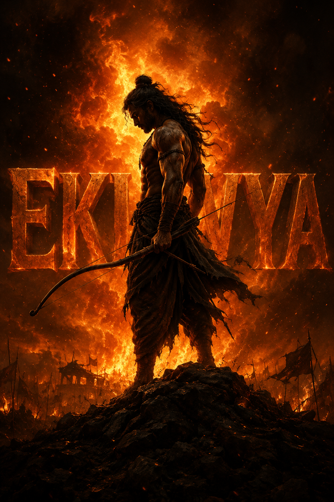

E K L A V Y A
SELF-TAUGHT. SELF-MADE. TRUE AIM.

SELF-TAUGHT. SELF-MADE. TRUE AIM.
I am Adii, a passionate and dedicated Bachelor of Technology (B.Tech.) student pursuing Artificial Intelligence and Data Science (AI&DS) at Vishwakarma Institute of Technology (VIT), Pune.
I have a strong interest in software development, artificial intelligence, data science, and modern web technologies. I enjoy learning new technologies and applying them to solve real-world problems through practical projects.
Throughout my academic journey, I have worked on projects involving Python, C++, PHP, MySQL, HTML, CSS, JavaScript, Flask, Machine Learning, and Database Management Systems.
I enjoy building applications that combine functionality with user-friendly interfaces and continuously strive to improve my programming and problem-solving skills.
Beyond academics, I am always eager to explore emerging technologies, improve my communication skills, and expand my knowledge in artificial intelligence, cybersecurity, and full-stack development.
I believe in continuous learning, teamwork, and creating solutions that have a meaningful impact.